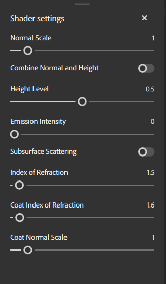

The Shader Settings panel is where you can configure how the shader renders your assets on the mesh in the 3D viewport.
Material parameters let you adjust how your current material is rendered by the shader.
| Parameter name | Description |
|---|---|
Normal Scale |
Adjust the strength or intensity of the normal map. |
| Combine normal and height | Toggle whether Height and normal maps are combined into a single map. |
| Height Level | Change the base level of the height for displacement. |
| Emission Intensity | Adjust the strength of emissive maps. |
| Subsurface scattering | Toggle Subsurface scattering on or off. |
| Index of Refraction | Adjust the angle at which light refracts off surfaces. |
| Coat Index of Refraction | Adjust the angle at which light refracts off the surface coat. |
| Coat Normal Scale | Adjust the normal scale specifically for the surface coat. |